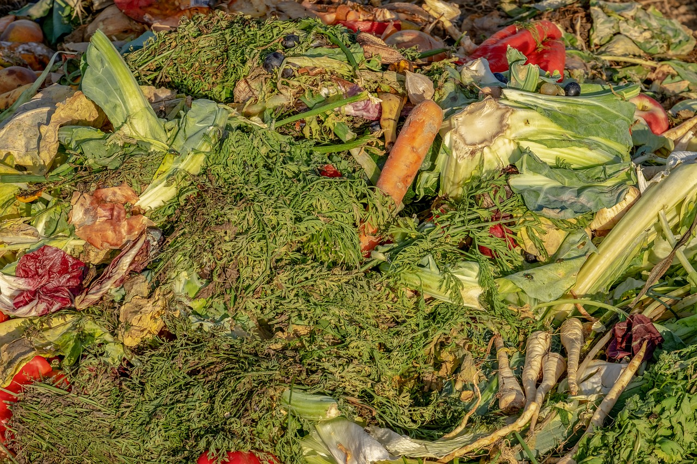
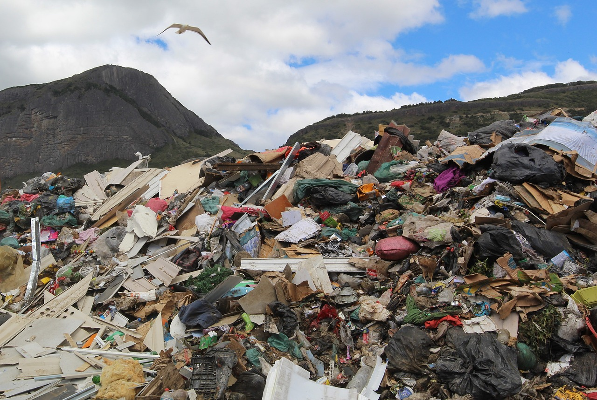
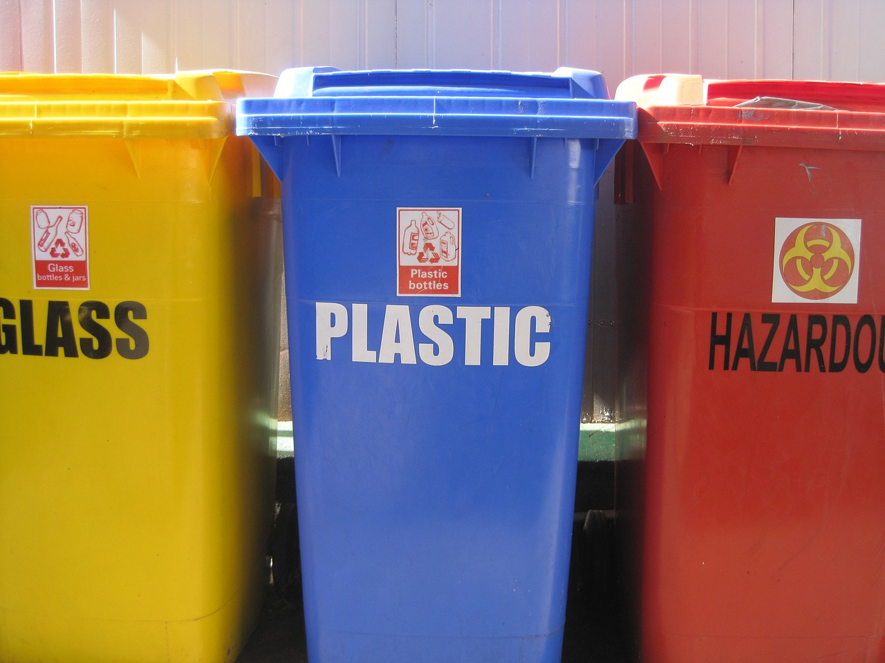
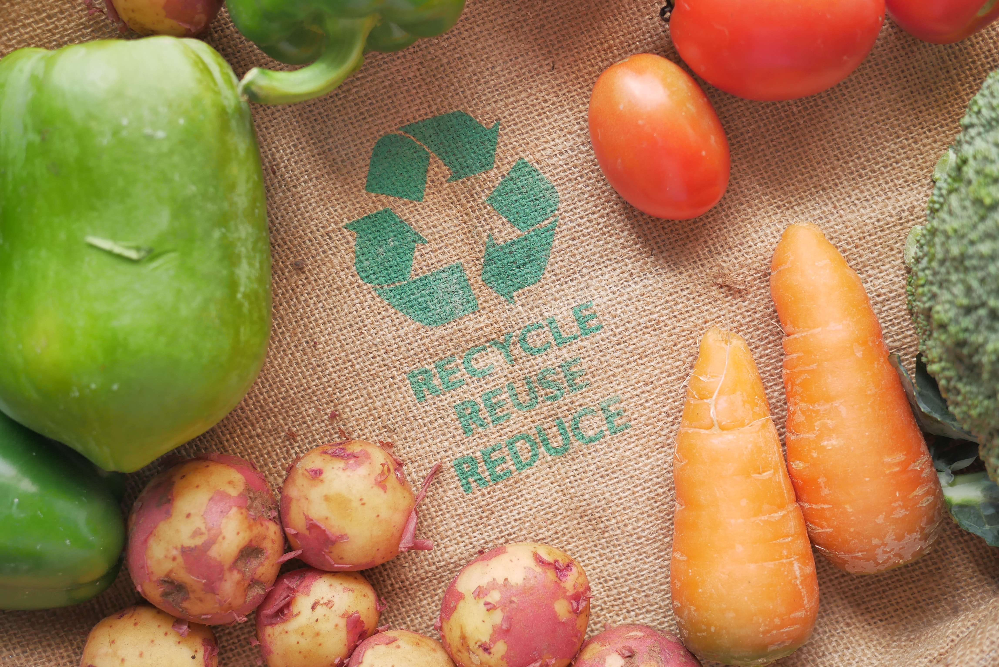

ODS 12: Por que o modo de produção e consumo atual é insustentável
Desde o início da humanidade e da sua organização social existe a necessidade de usar meios de produção para gerar seus bens de consumo, como alimentos, roupas e moradia. Essa necessidade se ampliou com as revoluções industriais e com o aumento da produção de bens e do consumo humano, causando o avanço da tecnologia e das técnicas de produção. Porém isso também levou a geração de poluição, lixo e desperdício no momento de fabricar os bens de consumo, além do consumismo exagerado que sobrecarrega os recursos naturais do planeta. O modo de produção atual, também chamado de economia linear, traz consigo o despejo de resíduos químicos e sólidos no meio ambiente, o que ameaça a existência de todos os seres vivos, incluindo nós seres humanos.


O consumo excessivo está associado ao modo de produção e as desigualdades sociais, pois na agricultura cerca de 30% dos alimentos são desperdiçados todos anos, desde a sua produção no agronegócio ao manuseio desse alimentos, e ao mesmo tempo existem 21,1 milhões de pessoas em situação de insegurança alimentar só no Brasil. Os países onde mais se consome também são os que possuem alta renda, enquanto os mais países mais pobres só consomem cerca de 11%. Com relação ao lixo, apenas 4% é reciclado no Brasil e a maior parte vai para os lixões, aterros sanitários e ruas, onde acaba contaminando o solo, os lençóis freáticos ou rios.
 A poluição por parte das indústrias através de resíduos químicos ou de gases que agravam o efeito estufa também são um dos desafios, e o Brasil está em quarto lugar quando se trata da emissão desses gases poluentes. Portanto o modo de produção e consumo atual em forma de economia linear torna insustentável a preservação e conservação do meio ambiente, é responsável pelas mudanças climáticas, pelo desmatamento e pela poluição, e já impede que muitos tenham uma boa qualidade de vida.

É necessário educar a sociedade a respeito do consumo consciente e da origem das coisas que consumimos. Cada um de nós pode contribuir para melhorar esse quadro por meio de ações pequenas como de consumo consciente, comprar de empresas que tenham iniciativas de diminuir impactos ambientais ou que pratiquem agricultura sustetável, usar bens de consumo mais duráveis e também reutilizá-los. Também é importante que haja investimentos em iniciativas ou empresas que têm a meta de diminuir impactos ambientais dos sistemas de produção, investir em tecnologias e em parcerias com empresas de reciclagem ou que tem iniciativas de economia circular.
 